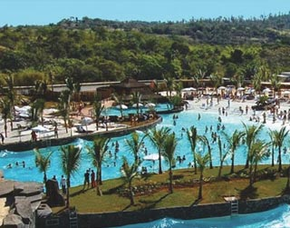

CALDAS NOVAS
Contra estresse, desânimo e até mesmo reumatismo, nada melhor do que uns dias em Caldas Novas. Possuindo uma ótima infraestrutura de hotéis, bares e restaurantes, cidade goiana é conhecida por suas águas quentes com efeitos medicinais. Caldas Novas, porém, não oferece apenas suas piscinas com águas aquecidas naturalmente, ali é possível praticar esportes aquáticos, pescar, andar de barco, além de passear por belas áreas verdes que levam a cachoeiras.